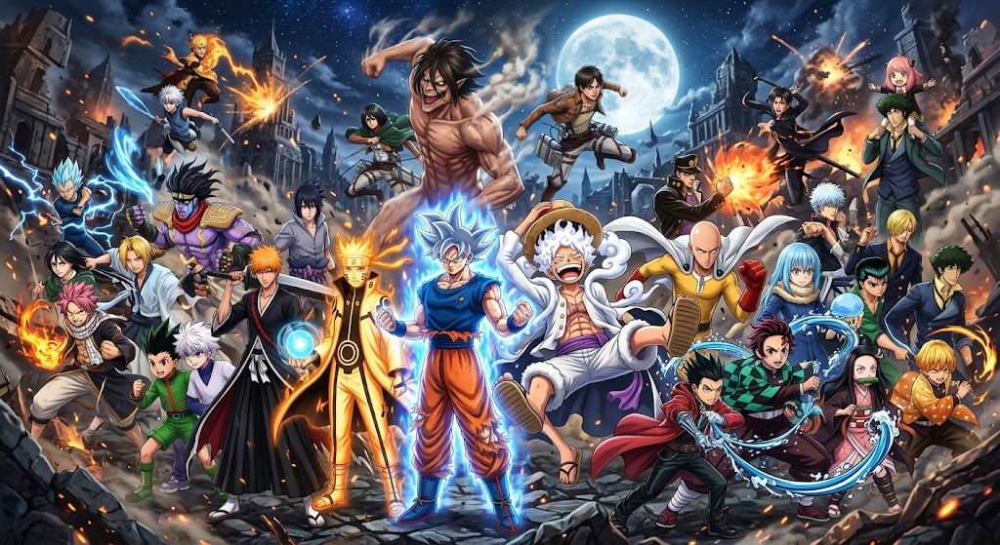

Meu primeiro post
Por: Michael Henrique
Saitama sola goku, e quem discorda não sabe de anime, Goku é um herói de shonen clássico: ele tem limites, treina para superá-los, sangra, apanha e precisa de transformações (como o Instinto Superior) para vencer barreiras. Saitama é um personagem de paródia/gag. O conceito dele é, literalmente, ser forte demais para a própria história. O Instinto Superior do Goku serve para desviar automaticamente dez ataques, mas a própria existência do Saitama dita que, se ele acertar um soco sério, a luta acaba. Ele quebra a lógica do gênero.